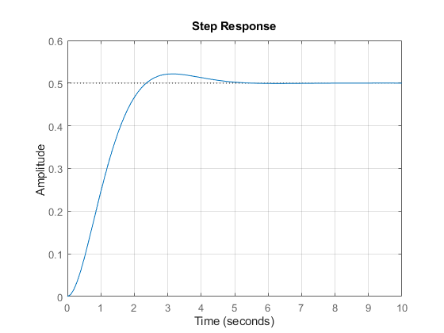
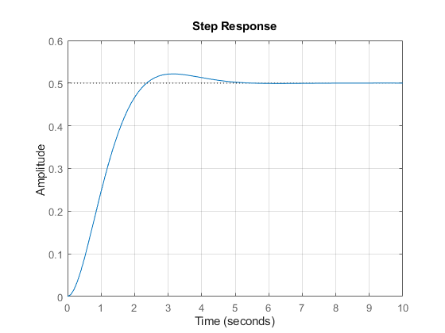
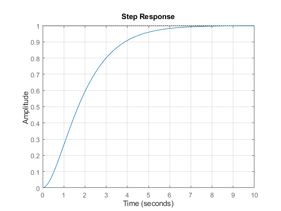
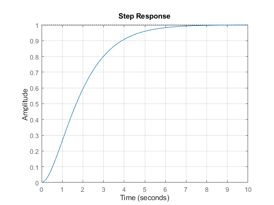
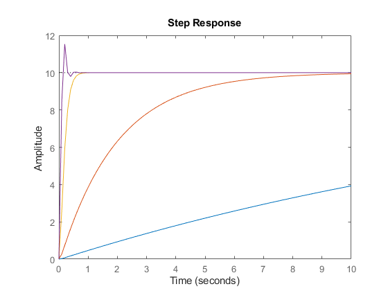

Laboratório de Sistemas Dinâicos
Prática 05 08/04/2024 Autores: Victor Hugo Daia Lorenzato e Whilker Henrique Santos Silva
Contents
Limpar workspcade
clear;
close all;
clc;
Ex. 1 a)
t = [0:0.1:10]; zeros = []; poles = [i -i]; gain = 1; As = zpk(zeros,poles,gain) figure(1) pzmap(As);grid ('on'); num = [1]; den = [1 1]; figure(2) step(num,den,t);grid ('on');
As =
1
---------
(s^2 + 1)
Continuous-time zero/pole/gain model.
Ex. 1 b)
zeros = []; poles = [-1+i -1-i]; gain = 1; Bs = zpk(zeros,poles,gain) figure(3) pzmap(Bs);grid ('on'); num1 = [1]; den1 = [1 2 2]; figure(4) step(num1,den1,t);grid ('on');
Bs =
1
--------------
(s^2 + 2s + 2)
Continuous-time zero/pole/gain model.
 
 Ex. 1 c)
zeros = []; poles = [-1 -1]; gain = 1; Cs = zpk(zeros,poles,gain) figure(5) pzmap(Cs);grid ('on'); num2 = [1]; den2 = [1 2 1]; figure(6) step(num2,den2,t);grid ('on');
Cs =
1
-------
(s+1)^2
Continuous-time zero/pole/gain model.
 
 Ex. 1 d)
zeros = []; poles = [-2 -4]; gain = 1; Ds = zpk(zeros,poles,gain) figure(7) pzmap(Ds);grid ('on'); num3 = [1]; den3 = [1 6 8]; figure(8) step(num3,den3,t);grid ('on');
Ds =
1
-----------
(s+2) (s+4)
Continuous-time zero/pole/gain model.


Ex. 2
k = 1; t = [0:0.1:10]; Ts = tf(10*k,[1 20 k]) step(Ts,t); hold on k1 = 10; t1 = [0:0.1:10]; Ts1 = tf(10*k1,[1 20 k1]) step(Ts1,t1); hold on k2 = 100; t2 = [0:0.1:10]; Ts2 = tf(10*k2,[1 20 k2]) step(Ts2,t2); hold on k3 = 400; t3 = [0:0.1:10]; Ts3 = tf(10*k3,[1 20 k3]) step(Ts3,t3); hold on
Ts =
10
--------------
s^2 + 20 s + 1
Continuous-time transfer function.
Ts1 =
100
---------------
s^2 + 20 s + 10
Continuous-time transfer function.
Ts2 =
1000
----------------
s^2 + 20 s + 100
Continuous-time transfer function.
Ts3 =
4000
----------------
s^2 + 20 s + 400
Continuous-time transfer function.
 Ex. 3 a)
t1 = [0:0.1:10]; Cs = tf(1,[1 1]); x = 0.1; num=[x]; den=[1 x]; Gs=tf(num,den) ; Hs = Cs*Gs y= step(Hs,t1); x1 = 1; num1=[x1]; den1=[1 x1]; Gs1=tf(num1,den1); Hs1 = Cs*Gs1 y1= step(Hs1,t1); x2 = 10; num2=[x2]; den2=[1 x2]; Gs2=tf(num2,den2); Hs2 = Cs*Gs2 y2= step(Hs2,t1); plot(t1,y1,t1,y2,t1,y3); xlabel('Tempo(s)');ylabel('Amplitude');title('Resposta ao degrau'); grid('on'); grid('on');
Hs =
0.1
-----------------
s^2 + 1.1 s + 0.1
Continuous-time transfer function.
Hs1 =
1
-------------
s^2 + 2 s + 1
Continuous-time transfer function.
Hs2 =
10
---------------
s^2 + 11 s + 10
Continuous-time transfer function.
Unrecognized function or variable 'y3'.
Error in pratica_4 (line 116)
plot(t1,y1,t1,y2,t1,y3); xlabel('Tempo(s)');ylabel('Amplitude');title('Resposta ao degrau'); grid('on');
Ex. 3 b)
Cs = tf(1,[1 1]);
s = tf('s');
t1 = [0:0.1:100];
x = 0.1;
num=[x];
den=[1 x];
Gs=tf(num,den) ;
Hs = Cs*Gs
Aprox = 1/(2.14*s+1)
step(Aprox,Hs);
x1 = 1;
num1=[x1];
den1=[1 x1];
Gs1=tf(num1,den1);
Hs1 = Cs*Gs1
Aprox1 = tf(1,[2.14 1])
step(Aprox1,Hs1);
x2 = 10;
num2=[x2];
den2=[1 x2];
Gs2=tf(num2,den2);
Hs2 = Cs*Gs2
Aprox2 = tf(1,[2.14 1])
step(Aprox2,Hs2);
Ex. 4 a)
Cs = tf(1, [1 1 1]); step(Cs);
Ex. 4 b)
% Para x = 0.1 Gs01 = tf(1, [1 0.1]); step(Gs01); % Para x = 1 Gs1 = tf(1, [1 1]); step(Gs1); % Para x = 3 Gs3 = tf(1, [1 3]); step(Gs3); % Para x = 5 Gs5 = tf(1, [1 5]); step(Gs5);
Ex. 4 c)
% Para x = 0.1 Ts01 = series(Cs, Gs01); step(Ts01); % Para x = 1 Ts1 = series(Cs, Gs1); step(Ts1); % Para x = 3 Ts3 = series(Cs, Gs3); step(Ts3); % Para x = 5 Ts5 = series(Cs, Gs5); step(Ts5);
Ex. 4 d)
step(Cs,Gs01,Gs1,Gs3,Gs5,Ts01,Ts1,Ts3,Ts5); grid('on');
Ex. 4 e)
%Análise no relatório.
Ex. 5
t1 = [0:0.1:10]; Cs = tf(1,[1 1 1]) x = 0.1; num=[1 x]; den=[x]; Gs=tf(num,den) Hs = Cs*Gs y1= step(Hs,t1) x1 = 1; num=[1 x1]; den=[x1]; Gs=tf(num,den) Hs = Cs*Gs y2= step(Hs,t1) x2 = 3; num=[1 x2]; den=[x2]; Gs=tf(num,den) Hs = Cs*Gs y3= step(Hs,t1) x3 = 5; num=[1 x3]; den=[x3]; Gs=tf(num,den) Hs = Cs*Gs y4= step(Hs,t1) plot(t1,y1,t1,y2,t1,y3,t1,y4); xlabel('Tempo(s)');ylabel('Amplitude');title('Resposta ao degrau'); grid('on'); grid('on');